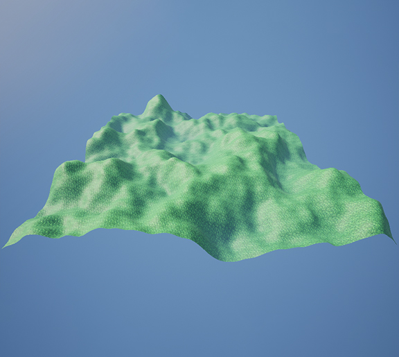
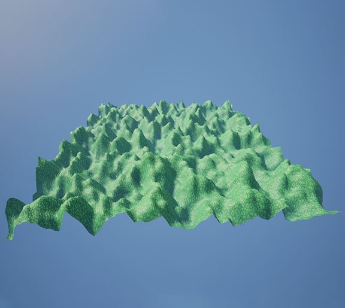
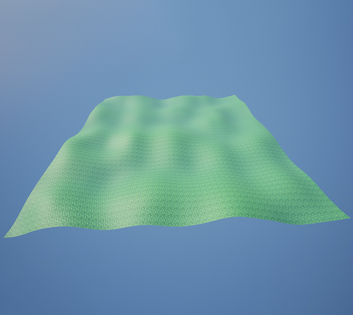
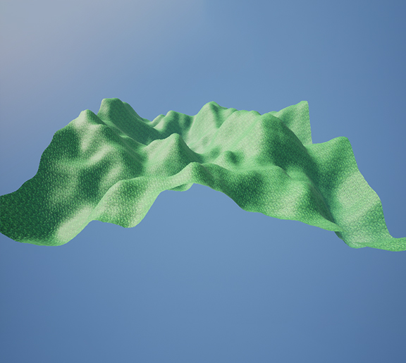
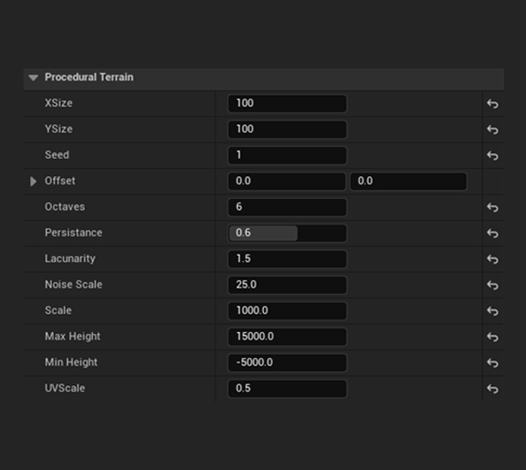

After one day of research and experimenting, I learned about Perlin noise and how to implement it in C++ Unreal for procedural generation and got some decent results that confirmed to me that it's possible to achieve my goal!
When playing some Valheim with my friends, I got fascinated by the terrain and kept wondering how They managed to accomplish something that intricate all procedurally!
And what better way to find out than jumping head-first into the deep without prior knowledge?
So that is exactly what I did!
1 / 6

Example One
2 / 6

Example Two
3 / 6

Example Three
4 / 6

Example Four
5 / 6

Example Five
6 / 6

Parameters
The next couple of days, I focused on making the terrain more realistic and look like a terrain which led to adding more variables and combining multiple noises to get more control of the result!
However, the system I used consisted of directly applying the Perlin noise to the height of a generated mesh resulting in a lot of guessing and wasting time!
To solve the problem caused by this system I completely changed the workflow of the terrain generation and implemented a new system to first generate the noise and save it as a texture then apply that texture to the procedural mesh!
Now that the system is much better I decided to spend just a tiny bit more time (*cough* 2+ Months *cough*) reading articles, watching videos, and surfing forums to get even better terrain, from which I discovered many more algorithms such as Open Simplex and implement them!
Finally, to make the terrain look more like an island and less like a random floating square I added a circular falloff to the texture and got some beautiful Procedural Terrains all done using Unreal/C++.